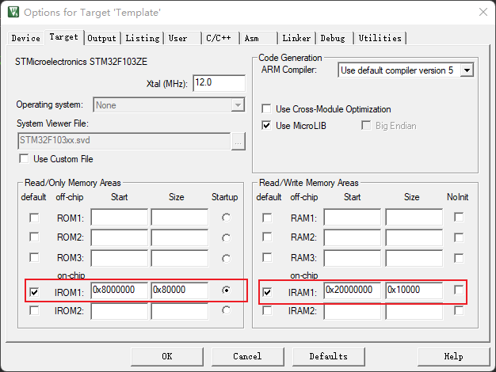

1. const的作用（4种）
const int N=100;//定义一个常量N
N=50; //错误，常量的值不能被修改
const int n; //错误，常量在定义的时候必须初始化
const char GetString() //定义一个函数
char *str= GetString() //错误，因为str没有被 const修饰
const char *str=GetString() //正确
#include <stdio.h>
#define M 3 //宏常量
const int N = 5; //此时并未将N放入内存中
int main()
{
int i = N; //此时为N分配内存 ，以后不再分配
int I = M; //预编译期间进行宏替换，分配内存
int j = N; //没有内存分配
int J = M; //在进行宏替换，又一次分配内存
}
const定义的只读变量从汇编的角度来看，只是给出了对应的内存地址，所以i=N,j=N的时候等于是i与j的地址指向了N这个内存静态区地址,这样达到了节省空间的目的.而不是像#define一样给出的是立即数，所以，const定义的只读变量在程序运行过程中只有一份备份（因为它是全局的只读变量，放在静态区），而#define定义的宏常量在内存中有若干个备份。
总的来说,const引入常量的概念,是让我们不去修改内存中不该修改的地方.比较直接的作用是编译器可以提前发现逻辑上的错误，入宫我们又修改了不该改的内存,那么必然会引起程序崩溃.所以尽量多得使用const.
2.const修饰节省空间解析
MCU由于其资源较为紧张，所以通常通常需要对内存的资源进行节省，参考链接如下
2.1 const修饰指针的注意事项
其中1,2两种形式是一致的，const均修饰的*ArrayList表示其ArrayList指针指向的存储控件不变，当是自身指向可变；
第3种情况const直接修饰的ArrayList3所以其指针指向是不能改变的，但指针所指向的存储控件内容可以发生变化，当然如下的hello bug不是变量而是一个常量，所以与第4种形式几乎是一样的。
第四种情况const直接修饰的ArrayList4其指针指向和指针指向的内容都不可以发生改变，由于“hello bug”默认是一个const的字符常量，所以这条语句和第三条语句含义基本相同，但是需要注意其他情况下有所不同。
const char *ArrayList1 = "hello bug";
char const *ArrayList2 = "hello bug";
char *const ArrayList3 = "hello bug";
const char *const ArrayList4 = "hello bug";
2.2 测试
我所使用的是STM32F103mini，使用MDK5创建工程
在工程选项中，我们可以看到ROM（Read Only Memory）和RAM(Read/Write Access memory)的起始地址分别为8000000和2000000，接下来使用const创建一个结构体。
定义一个结构体并初始化
typedef struct _tag_Pid
{
int P;
int I;
int D;
int PreOut;
int Out;
int Max;
int Min;
}stPid;
volatile const stPid PidParamList[] = { {1,2,3,0,0,0,},
{1,2,3,0,0,0,},
{1,2,3,0,0,0,},
{1,2,3,0,0,0,},
{1,2,3,0,0,0,},
{1,2,3,0,0,0,},
};
3. 参考文章
const相较于define节省RAM内存：